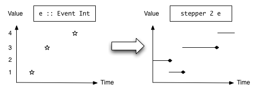

| Safe Haskell | None |
|---|---|
| Language | Haskell98 |
Reactive.Banana.Combinators
Contents
- data Event a
- data Behavior a
- interpret :: (Event a -> Moment (Event b)) -> [Maybe a] -> IO [Maybe b]
- module Control.Applicative
- module Data.Monoid
- never :: Event a
- unionWith :: (a -> a -> a) -> Event a -> Event a -> Event a
- filterE :: (a -> Bool) -> Event a -> Event a
- apply :: Behavior (a -> b) -> Event a -> Event b
- data Moment a
- class Monad m => MonadMoment m where
- accumE :: MonadMoment m => a -> Event (a -> a) -> m (Event a)
- stepper :: MonadMoment m => a -> Event a -> m (Behavior a)
- valueB :: MonadMoment m => Behavior a -> m a
- valueBLater :: MonadMoment m => Behavior a -> m a
- observeE :: Event (Moment a) -> Event a
- switchE :: MonadMoment m => Event (Event a) -> m (Event a)
- switchB :: MonadMoment m => Behavior a -> Event (Behavior a) -> m (Behavior a)
- (<@>) :: Behavior (a -> b) -> Event a -> Event b
- (<@) :: Behavior b -> Event a -> Event b
- filterJust :: Event (Maybe a) -> Event a
- filterApply :: Behavior (a -> Bool) -> Event a -> Event a
- whenE :: Behavior Bool -> Event a -> Event a
- split :: Event (Either a b) -> (Event a, Event b)
- unions :: [Event (a -> a)] -> Event (a -> a)
- accumB :: MonadMoment m => a -> Event (a -> a) -> m (Behavior a)
- mapAccum :: MonadMoment m => acc -> Event (acc -> (x, acc)) -> m (Event x, Behavior acc)
Synopsis
The main types and combinators of Functional Reactive Programming (FRP).
At its core, FRP is about two data types Event and Behavior
and the various ways to combine them.
There is also a third type Moment,
which is necessary for the higher-order combinators.
Core Combinators
Event and Behavior
Event a represents a stream of events as they occur in time.
Semantically, you can think of Event a as an infinite list of values
that are tagged with their corresponding time of occurrence,
type Event a = [(Time,a)]
Each pair is called an event occurrence. Note that within a single event stream, no two event occurrences may happen at the same time.

Behavior a represents a value that varies in time.
Semantically, you can think of it as a function
type Behavior a = Time -> a

Instances
| Functor Behavior Source # | The function fmap :: (a -> b) -> Behavior a -> Behavior b fmap f b = \time -> f (b time) |
| Applicative Behavior Source # | The function pure :: a -> Behavior a pure x = \time -> x The combinator (<*>) :: Behavior (a -> b) -> Behavior a -> Behavior b fx <*> bx = \time -> fx time $ bx time |
interpret :: (Event a -> Moment (Event b)) -> [Maybe a] -> IO [Maybe b] Source #
Interpret an event processing function. Useful for testing.
Note: You can safely assume that this function is pure,
even though the type seems to suggest otherwise.
I'm really sorry about the extra IO, but it can't be helped.
See source code for the sordid details.
First-order
This subsections lists the primitive first-order combinators for FRP.
The Functor and Applicative instances are also part of this,
but they are documented at the types Event and Behavior.
module Control.Applicative
module Data.Monoid
unionWith :: (a -> a -> a) -> Event a -> Event a -> Event a Source #
Merge two event streams of the same type. The function argument specifies how event values are to be combined in case of a simultaneous occurrence. The semantics are
unionWith f ((timex,x):xs) ((timey,y):ys) | timex < timey = (timex,x) : unionWith f xs ((timey,y):ys) | timex > timey = (timey,y) : unionWith f ((timex,x):xs) ys | timex == timey = (timex,f x y) : unionWith f xs ys
filterE :: (a -> Bool) -> Event a -> Event a Source #
Allow all events that fulfill the predicate, discard the rest. Semantically,
filterE p es = [(time,a) | (time,a) <- es, p a]
apply :: Behavior (a -> b) -> Event a -> Event b Source #
Apply a time-varying function to a stream of events. Semantically,
apply bf ex = [(time, bf time x) | (time, x) <- ex]
This function is generally used in its infix variant <@>.
Moment and accumulation
The Moment monad denotes a pure computation that happens
at one particular moment in time. Semantically, it is a reader monad
type Moment a = Time -> a
When run, the argument tells the time at which this computation happens.
Note that in this context, time really means to logical time.
Of course, every calculation on a computer takes some
amount of wall-clock time to complete.
Instead, what is meant here is the time as it relates to
Events and Behaviors.
We use the fiction that every calculation within the Moment
monad takes zero logical time to perform.
class Monad m => MonadMoment m where Source #
An instance of the MonadMoment class denotes a computation
that happens at one particular moment in time.
Unlike the Moment monad, it need not be pure anymore.
Minimal complete definition
Methods
liftMoment :: Moment a -> m a Source #
Instances
accumE :: MonadMoment m => a -> Event (a -> a) -> m (Event a) Source #
The accumE function accumulates a stream of event values,
similar to a strict left scan, scanl'.
It starts with an initial value and emits a new value
whenever an event occurrence happens.
The new value is calculated by applying the function in the event
to the old value.
Example:
accumE "x" [(time1,(++"y")),(time2,(++"z"))]
= trimE [(time1,"xy"),(time2,"xyz")]
where
trimE e start = [(time,x) | (time,x) <- e, start <= time]stepper :: MonadMoment m => a -> Event a -> m (Behavior a) Source #
Construct a time-varying function from an initial value and a stream of new values. The result will be a step function. Semantically,
stepper x0 ex = \time1 -> \time2 ->
last (x0 : [x | (timex,x) <- ex, time1 <= timex, timex < time2])Here is an illustration of the result Behavior at a particular time:

Note: The smaller-than-sign in the comparison timex < time2 means
that at time time2 == timex, the value of the Behavior will
still be the previous value.
In the illustration, this is indicated by the dots at the end
of each step.
This allows for recursive definitions.
See the discussion below for more on recursion.
Recursion
Recursion is a very important technique in FRP that is not apparent from the type signatures.
Here is a prototypical example. It shows how the accumE can be expressed
in terms of the stepper and apply functions by using recursion:
accumE a e1 = mdo let e2 = (\a f -> f a) <$> b <@> e1 b <- stepper a e2 return e2
(The mdo notation refers to value recursion in a monad.
The MonadFix instance for the Moment class enables this kind of recursive code.)
(Strictly speaking, this also means that accumE is not a primitive,
because it can be expressed in terms of other combinators.)
This general pattern appears very often in practice:
A Behavior (here b) controls what value is put into an Event (here e2),
but at the same time, the Event contributes to changes in this Behavior.
Modeling this situation requires recursion.
For another example, consider a vending machine that sells banana juice.
The amount that the customer still has to pay for a juice
is modeled by a Behavior bAmount.
Whenever the customer inserts a coin into the machine,
an Event eCoin occurs, and the amount will be reduced.
Whenver the amount goes below zero, an Event eSold will occur,
indicating the release of a bottle of fresh banana juice,
and the amount to be paid will be reset to the original price.
The model requires recursion, and can be expressed in code as follows:
mdo
let price = 50 :: Int
bAmount <- accumB price $ unions
[ subtract 10 <$ eCoin
, const price <$ eSold ]
let eSold = whenE ((<= 0) <$> bAmount) eCoinOn one hand, the Behavior bAmount controls whether the Event eSold
occcurs at all; the bottle of banana juice is unavailable to penniless customers.
But at the same time, the Event eSold will cause a reset
of the Behavior bAmount, so both depend on each other.
Recursive code like this examples works thanks to the semantics of stepper.
In general, mutual recursion between several Events and Behaviors
is always well-defined,
as long as an Event depends on itself only via a Behavior,
and vice versa.
Higher-order
valueB :: MonadMoment m => Behavior a -> m a Source #
Obtain the value of the Behavior at a given moment in time.
Semantically, it corresponds to
valueB b = \time -> b time
Note: The value is immediately available for pattern matching.
Unfortunately, this means that valueB is unsuitable for use
with value recursion in the Moment monad.
If you need recursion, please use valueBLater instead.
valueBLater :: MonadMoment m => Behavior a -> m a Source #
Obtain the value of the Behavior at a given moment in time.
Semantically, it corresponds to
valueBLater b = \time -> b time
Note: To allow for more recursion, the value is returned lazily
and not available for pattern matching immediately.
It can be used safely with most combinators like stepper.
If that doesn't work for you, please use valueB instead.
observeE :: Event (Moment a) -> Event a Source #
Observe a value at those moments in time where event occurrences happen. Semantically,
observeE e = [(time, m time) | (time, m) <- e]
switchE :: MonadMoment m => Event (Event a) -> m (Event a) Source #
Dynamically switch between Event.
Semantically,
switchE ee = \time0 -> concat [trim t1 t2 e | (t1,t2,e) <- intervals ee, time0 <= t1]
where
intervals e = [(time1, time2, x) | ((time1,x),(time2,_)) <- zip e (tail e)]
trim time1 time2 e = [x | (timex,x) <- e, time1 < timex, timex <= time2]switchB :: MonadMoment m => Behavior a -> Event (Behavior a) -> m (Behavior a) Source #
Dynamically switch between Behavior.
Semantically,
switchB b0 eb = \time0 -> \time1 ->
last (b0 : [b | (timeb,b) <- eb, time0 <= timeb, timeb < time1]) time1Derived Combinators
Infix operators
(<@) :: Behavior b -> Event a -> Event b infixl 4 Source #
Tag all event occurrences with a time-varying value. Similar to <*.
infixl 4 <@
Filtering
filterApply :: Behavior (a -> Bool) -> Event a -> Event a Source #
Allow all events that fulfill the time-varying predicate, discard the rest.
Generalization of filterE.
whenE :: Behavior Bool -> Event a -> Event a Source #
Allow events only when the behavior is True.
Variant of filterApply.
Accumulation
Note: All accumulation functions are strict in the accumulated value!
Note: The order of arguments is acc -> (x,acc)
which is also the convention used by unfoldr and State.
unions :: [Event (a -> a)] -> Event (a -> a) Source #
Merge event streams whose values are functions. In case of simultaneous occurrences, the functions at the beginning of the list are applied after the functions at the end.
unions [] = never unions xs = foldr1 (unionWith (.)) xs
Very useful in conjunction with accumulation functions like accumB
and accumE.
accumB :: MonadMoment m => a -> Event (a -> a) -> m (Behavior a) Source #
The accumB function accumulates event occurrences into a Behavior.
The value is accumulated using accumE and converted
into a time-varying value using stepper.
Example:
accumB "x" [(time1,(++"y")),(time2,(++"z"))] = stepper "x" [(time1,"xy"),(time2,"xyz")]
Note: As with stepper, the value of the behavior changes "slightly after"
the events occur. This allows for recursive definitions.